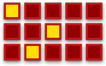
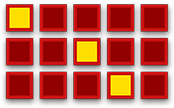
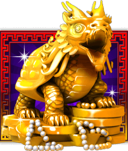
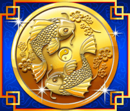

3 Golden Turtles award up to 20 Free Games with up to x30 Wild multiplier!
Free Games mode selection.
Free Games WILD Multiplier.
WILD symbol substitutes for any other symbol including SCATTER symbol.
The game is played with 243 fixed ways.
You can always refer to the INFO for any additional information on payouts and the rules of the game.
|
WIN  |
NO WIN  |
WILD SYMBOL
SCATTER SYMBOL
RTP (Return To Player) for this game is 96%.
Reels can also be spin using the AUTO SPINS function.
If you are disconnected from the Internet in the middle of the main game, the spin will be automatically completed. If you re-open the game, it will start from the very beginning. Your previous wins will be paid and you can click the History button to see the outcome of your previous round after you log back into the casino.
If you are disconnected from the Internet during a bonus round, free spins or re-spins, you will be automatically directed back to the game after you log back into the casino so you can continue the game.
If you are disconnected from the Internet during a spin using the Auto Play function, the spin will be automatically completed, but further spins will not automatically commence. You can click the History button to see the outcome of your previous round after you log back into the casino.
Please, note that all unresolved bets placed but remaining undecided in incomplete games will become void after 90 days and will be forfeited to charity.
Malfunction voids all pays and plays.
888 Turtles Choose from 5 free games modes and win up to 20 free games with a Wild multiplier of up to x30! 888 Turtles is an Oriental-themed slot with traditional Chinese symbols of good luck and prosperity. The game is played with 243 fixed ways. WILD symbol appears on reels 2 and 4 only and substitutes for any other symbol. 3 or more Scatter symbols from left to right trigger the Free Games feature with up to 20 Free Games. WILD symbol can multiply wins by up to x30 when substituting in free games. The Free Games feature can be retriggered indefinitely.